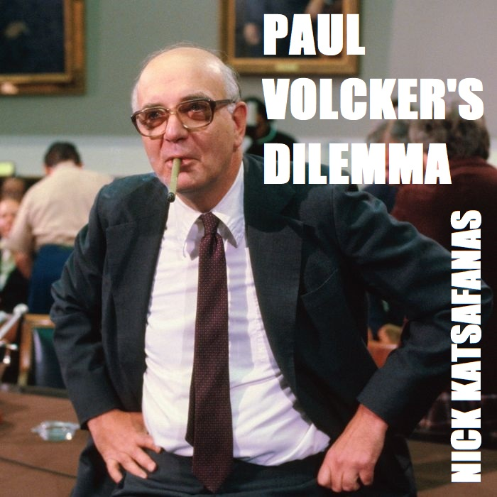
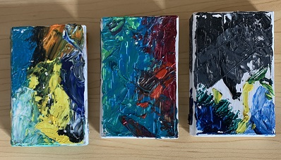

Download

Cassettes
Press Release:
Providence rock band Nee Nee makes its debut with this concise audio cassette EP Bananas are Yellow. Called both 'a communist book club' and 'a revolutionary ear drum testing bistro' by certain members of the press, the band combines vocalist Nick Peri's primitive drumming (done on Stagg childrens' snares and toms) with his unique take on the tanka poem, an ancient metrical form of Japanese literature. In place of rock's traditional electric guitar, the band uses an analog mixer modulated to produce distortion, feedback, and drones that are then improvised into solos. This debut EP contains 7 of their songs in a succinct 6 minute run-time.
-Tom Brokah
Recorded at 1455 Mineral Spring Avenue, Providence Rhode Island
2020 Property is Impossible Records
Text:
01 it's just the homeless
02 who truly recognize the
03 absurdity of
04 recording events, i took
05 a picture of a small pond
06 sitting on a rock
07 i took note of a cuddly
08 beaver wiggling
09 around my butt, right into
10 a crevice, i was nervous
11 at 4 am a
12 loud alarm was going off,
13 this dude donnie said
14 'i think the alarm's going
15 off', and i knew he was right
16 when it comes to the
17 perception of objects we
18 know there are different
19 theories, let's leave composite
20 events aside for right now
21 i couldn't truly
22 say anything about the
23 day was my first choice
24 in life, i wasn't giddy
25 as i bought the lowe's gift card
26 they said heroin
27 addicts make great musicians
28 and michael jackson
29 didn't stick his penis up
30 pre-teens' buttholes, i don't know